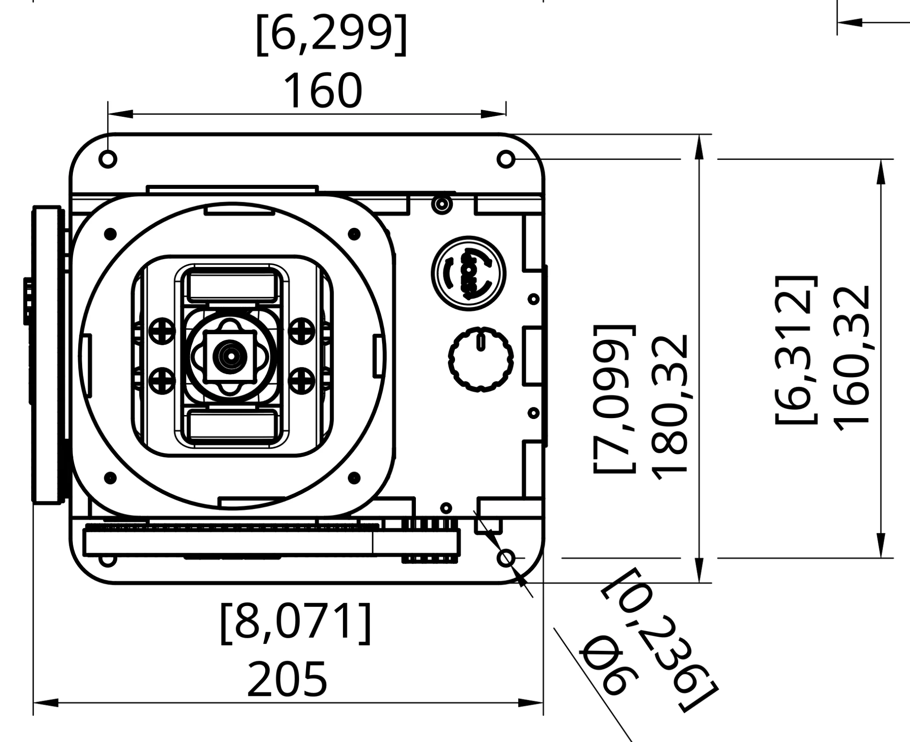
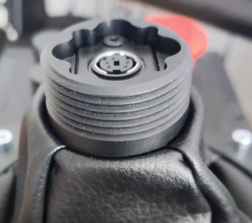
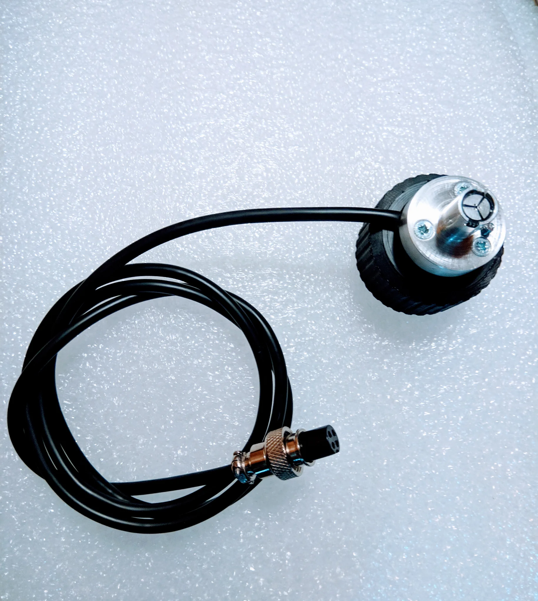
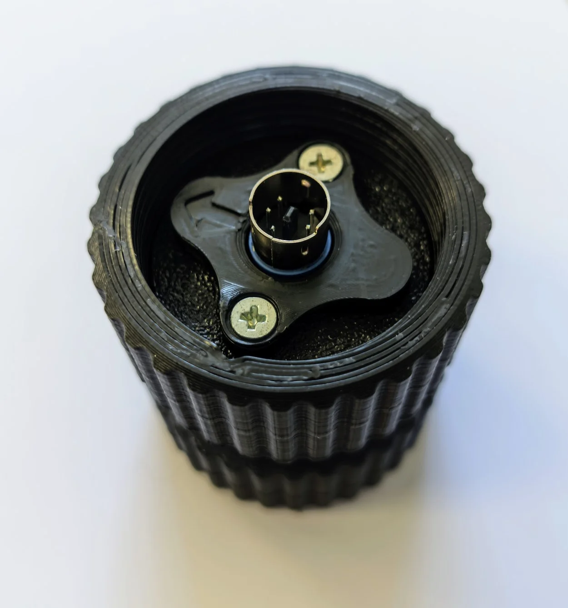
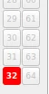
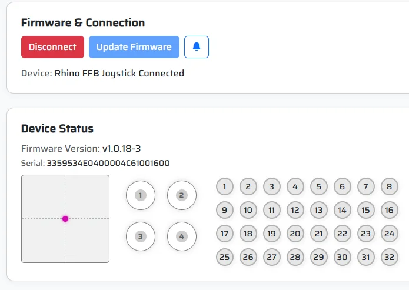

Getting Started¶
Force feedback is a fascinating but occasionally tricky subject. The complexity doesn’t come from the Rhino itself so much as from the sheer number of ways this technology can be used. Every simulator, every software layer, and every user’s setup brings its own flavor to the mix. The good news is that once you understand the basics, it all starts to make sense - and you can eat Rhinos the same way you eat elephants: one bite at a time.
This section of the manual is designed to guide you through that first meal. We’ll start with the essentials - getting your Rhino physically installed, connected, and recognized by the system - and move on to configuring the software so that you can experience your first proper force feedback flight or drive. By the end of this section, you’ll have a fully functional controller, ready to use with any simulator that supports FFB. The finer details, like tuning response curves, effect strengths, and simulator integrations, will come later once you’re ready for more.
Before diving in, it’s helpful to know what you’re actually working with. The Rhino isn’t just a joystick base with motors; it’s a high-precision control loading system capable of recreating complex physical sensations - from aerodynamic forces to mechanical friction - in real time. Each motor in the Rhino responds to both software commands and your own inputs, constantly adjusting torque to simulate how a real control stick behaves under load. That means correct setup and calibration are key to unlocking its full potential.
In this section, we’ll cover:
- Mounting and physical setup: How to secure the Rhino safely and give it the stability it deserves (and demands).
- Connecting and powering up: What to check before plugging it in and how to avoid common pitfalls.
- Basic software configuration: Installing and launching the FFB Configurator, testing motor response, and ensuring everything communicates correctly.
- Initial calibration and safety: How to center, verify movement, and use the safety stop effectively before your first live test.
Once these steps are complete, you’ll have a working Rhino that’s ready to stretch its legs - or, more accurately, its torque. You’ll be able to jump straight into a simulator like DCS World or IL-2 Great Battles and feel genuine aerodynamic resistance, not just spring tension.
The deeper sections of this manual will then show you how to fine-tune those sensations - how to make it feel heavier, smoother, lighter, or more “alive” depending on what you’re flying or driving. But for now, take it slow, enjoy the process, and remember: taming a Rhino isn’t difficult. You just have to start with one careful bite.
Technical Specifications¶
Physical:
- Weight: 5.2 kg
- Base dimensions: 205mm × 180mm
- Height to grip connector: 290mm
- Gimbal: 3D printed PETG/aluminum with bearings
- Transmission: 1:6.2 ratio belt drive
- Maximum throw: 22° each direction (44° total)
Motors:
- Two 57BLF03 NEMA servo motors
- Maximum torque: 9 N‧m per axis
- Maximum drive current: 30A per motor
- Typical power consumption: 150W
- Resolution: 14-bit per revolution, 13-bit effective stick resolution (12-bit per revolution, 11-bit effective for units before 2023 Q2)
Power & Cooling:
- Power supply: 180W, 20V (included)
- Cooling: Dual-fan active cooling (activates at 50°C motor temperature)
Safety & Controls:
- Emergency stop button (cuts all motor power when pressed)
- Built-in rotary encoder (1 bindable axis, defaults to spring force adjustment)
- Gear Covers are included
Grip Compatibility:
- Thrustmaster-style: Direct mount (Cougar, Warthog, F/A-18C)
- Virpil: Direct mount (MongoosT-50, WarBRD, Constellation Alpha, Alpha Prime, VFX, AH-64, UH-60, FLNKR), LEDs supported
- VKB: Adapter required (+ VKB main controller/black box for grip operation)
- WinWing: Adapter required
Physical Setup¶

The VPforce Rhino can be attached to any suitably durable and rigid mounting with four 6mm bolts (see schematic).
Due to the weight and strength of the hardware, the mounting structure needs to be designed accordingly. Also note that the gear and belt drives are on the outside of the base structure and it is important to make sure that they do not make any contact with other parts of the mounting system or the person in the pilot’s seat.
Attach the power cable and the included USB cable to the Rhino base and then connect them to the power socket and computer respectively.
The big red button is an important safety feature, make sure that you have unrestricted access to it at all times. To facilitate this you can rotate the Rhino and reverse the axis in software (see 2.4 for details).
To cut off all power to the motors, simply push down on the big red button until it locks.
To reset, rotate clockwise and let the button pop up.
The rotating knob can be used to control different features of the Rhino (see software sections for details), by default it controls the spring force.
The Rhino supports Thrustmaster (Cougar, Warthog, F/A-18C) and Virpil grips directly.
Note
Rotating Thrustmaster grips requires the use of an extension. For VKB and WinWing see below.

The VKB Adapter¶

The VKB Adapter is available in separate rev. B and rev. C variants. Choose the adapter that matches your grip socket. In addition to the Adapter, you will need a VKB main controller (black box) to operate VKB grips with the Rhino.
Note
The adapter has an external cable that attaches to the black box (see picture).
To connect the adapter to your VKB grip, push the connector into the grip until it makes contact and secure with the little screw thing - basically exactly as with a normal VKB base.
Important
If the connector is tight and doesn’t want to go in easily, DO NOT apply force to the rotating lower part. This can pinch and mangle the wire coming out of the adapter. Sitting on the adapter is also highly not recommended.
There is no electrical connection between the adapter and the Rhino, so you can simply place the adapter on the Rhino connector, rotate the grip freely into a suitably ergonomic position and screw the adapter’s lower part in until the connection is secure enough to hold the grip without rotating under stress. Re-tighten if necessary.
Note
The black box will blink a red light, because it doesn’t see any axis (only the grip connects to the black box). This is normal and will not hamper the operation of the device.
To use a VKB grip’s buttons for force trim or other functions in the Rhino software, run the included RhinoLoopback app and set Grip Type to Loopback. See details in the relevant section.
The WinWing Adapter¶

The WinWing adapter adapts the WinWing grips to the Rhino interface both mechanically and electrically. Tested and working correctly with the WinWing F-16EX and F-18 grips.
It converts the proprietary WinWing protocol to a TM standard 5-pin interface and also passes analog axis data such as brake lever and thumbsticks. It should be compatible with TM/Virpil bases, but without the analog axis functionality and possibly limited to 24 buttons.
Note
In some rare cases a WinWing grip will not report analog axis data, in that case a calibration of the grip analog functions needs to be performed via WinWing software on a WinWing base.
To use the full grip functionality on the Rhino base the “WinWing adapter” grip type needs to be selected in the drop down menu.
Note
On newer revisions of the WinWing adapter firmware, button number 32 will illuminate if the Grip connection with the WinWing grip is not functioning/disconnected.

The RHINO Throw Limiter Adapters¶
The RHINO’s 22-degree throw can feel excessive, especially with extensions. Physical throw limiter adapters set hard limits on stick movement. They can be ordered from VPforce or 3D printed from a parametric CAD model that lets you adjust the throw angles to your preference.
For detailed installation instructions, see Installing RHINO Throw Limiter.
Initial Connection and Updating the Firmware¶
When you connect the Rhino to your computer for the first time, a popup should appear with a link to the VPforce WebUSB Tool. If you miss the popup, you can visit the site directly: https://vpforce.eu/usb/rhino/.
On the website, click “Connect” to access firmware updates and basic configuration utilities. Select the correct Rhino from the list (for most users, it will be the only one shown) and click “Connect” again to establish the connection.

If the system detects that a newer firmware version is available, it will give you the option to update it - unsurprisingly labeled “Update Firmware”.
The same website also provides access to download the Rhino Desktop Software package for more advanced configuration and control.
Note
WebUSB requires a Chromium-based browser to function. Supported browsers include Google Chrome, Brave, Microsoft Edge, Opera, and similar. Firefox and other non-Chromium browsers do not support WebUSB, so the connection will not work in them.
Installing the Software and Basic Operation¶
Installing and Using the VPforce FFB Configurator¶
-
Download and Install the Software
Go to https://vpforce.eu/usb/rhino/ and download the latest Rhino Desktop Software package. While older versions are available, it’s recommended to use the latest release. The software comes as a simple ZIP file - unpack it to a folder of your choice. To start the configurator, double-click “VPforce_FFB_Configurator.exe” inside the folder. -
Verify Connection
Once open, you should see values like raw_x and raw_y react as you move the stick, along with curr_x, curr_y, and other parameters. If nothing appears:- Check that the Power supply and USB cable are connected.
- Make sure the big red button is not pressed in (rotate clockwise to reset if needed).
-
Additional troubleshooting tips can be found in the relevant sections of this manual.
-
Calibrate the Sensors
- This step is not required for production units, since they are calibrated before shipping
- Go to the Settings tab and click “Auto Calibrate”.
- Move the stick to all extremes to allow the software to detect the full range of motion.
- Turn off Auto Calibrate, then click “Apply Settings” to make the calibration active.
-
Saving the Configuration:
- Apply Settings: Activates the current configuration temporarily; it will be lost on device restart.
- Store Settings: Saves the configuration permanently to the Rhino’s flash memory.
- Read Config: Loads the stored device configuration back into the software.
Tip
If the stick’s movement feels excessive, see the “Endstops” section in the main software chapter. Or a physical limiter can be placed.
-
Basic Settings Overview
-
Master Gain (Settings tab): This is the main power slider for the Rhino. Start at 100% to explore the full range, or lower it to suit your setup.
-
Periodic Effects (below Master Gain): Used for in-game events like stall shakes, gunfire, or engine vibrations.
-
-
Testing the Controller
- Go to the Effects tab and select “Spring”, setting its gain to 100%.
- Ensure the Spring slider in the Settings tab is not at zero.
- The stick will otherwise feel limp until it receives input from a game or software. The Spring effect in the configurator provides basic centering so you can feel the Rhino and experiment with other settings.
Important
Do not select “Sticky” at this point. Keeping it active will override other software and prevent your simulator from controlling the force feedback properly.
-
Next Steps
Once calibration and basic settings are complete, you’re ready to start testing the Rhino in your simulator. For detailed configuration options, advanced effects, and game-specific setups, see the main sections of this manual.With this setup, you’re now ready to begin your journey into the subtle art, and raw power, of Rhino force feedback.
Understanding Configuration Profiles and Personalization¶
Why Profile Sharing Is Rare in the Rhino Community
Unlike traditional gaming peripherals, Rhino setups vary significantly from user to user. Profile sharing is uncommon in the Rhino community for several practical reasons:
Hardware Diversity: The Rhino ecosystem includes stock bases, numerous DIY builds, and fully custom designs. Each configuration behaves differently due to variations in mechanical construction, grip weight, extension length, and material choices.
Grip and Extension Variations: Even stock Rhino bases differ substantially depending on the attached grip (full metal vs plastic) and extension length. A configuration that feels perfect on one setup may be completely unusable on another with different physical characteristics.
Individual Preference: Force feedback is highly subjective. What feels “realistic” or “comfortable” to one pilot may feel too stiff, too loose, or simply wrong to another.
Recommended Approach - Build Your Own Baseline:
Rather than searching for pre-made profiles, invest time learning the Config software and building your own baseline configuration from scratch. This approach ensures your settings match your specific hardware and personal preferences.
-
Start Simple - No Effects: Begin with just the fundamental feel of the stick before adding complex effects.
-
Tune Core Forces First: Focus on damping, inertia, minimal friction (use sparingly), and spring force. These form the foundation of your force feedback experience.
-
Set Spring to Maximum Safe Level: Adjust the spring force to the highest setting your hardware can handle without exceeding current limits, then bind it to the rotary potentiometer for easy adjustment during flight.
-
Add Telemetry Effects Last: Once you have a solid baseline, start with default TelemFFB settings and adjust them on-the-fly during gameplay to match your taste.
Why This Matters
Taking time to understand the Config software and build your own baseline may seem more demanding than loading someone else’s profile, but it results in a configuration perfectly matched to your unique hardware and flying style. This foundation makes all future adjustments easier and more effective.